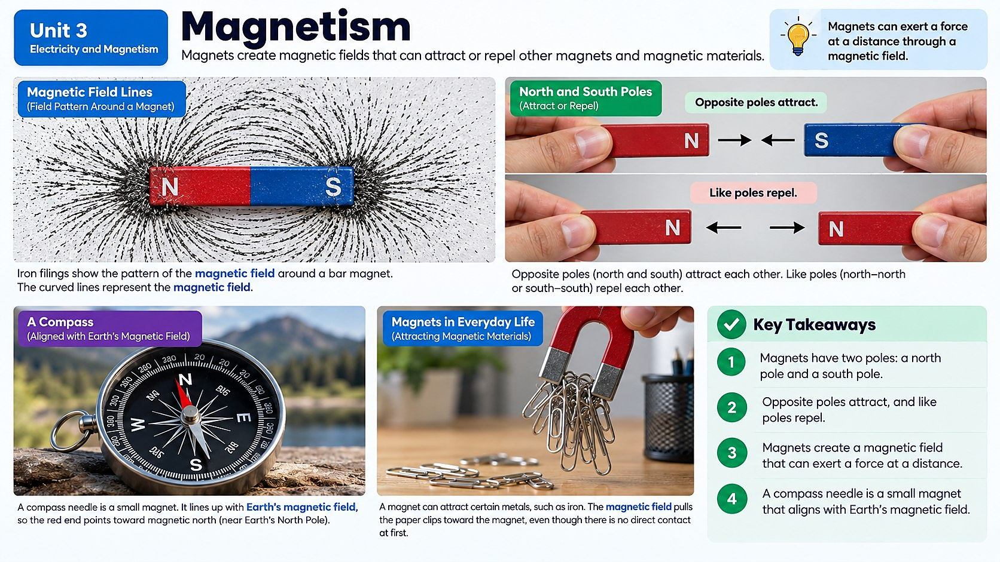

How can a refrigerator magnet grab a metal spoon from an inch away, and why does a compass needle always swing around to point north no matter where you are on Earth?

What Actually Makes Something Magnetic?
Every atom in the universe has electrons buzzing around its center, and each of those electrons behaves a little like a tiny spinning top. That spin creates a super small magnetic effect. In most materials, electrons spin in every random direction, so all those tiny magnetic effects cancel each other out and the material shows no magnetism at all.
But in materials like iron, nickel, and cobalt, something special can happen: groups of electrons can line up and spin in the same direction. When enough of these tiny electron magnets point the same way, their effects add together instead of canceling out, and the whole object becomes magnetic. This is why a steel paperclip can become magnetic after you rub it with a magnet, and it's also why Earth itself acts like a giant magnet, thanks to swirling molten iron deep in its core.
That's the reason a compass works anywhere on the planet. The compass needle is a tiny magnet that is free to spin, and it lines up with Earth's own magnetic field, always pointing toward magnetic north. You don't need to plug a compass into anything or charge it up. It's just responding to a field that has been there the whole time.
Invisible Fields You Can Actually See Evidence Of
You can't see a magnetic field with your bare eyes, but you can absolutely see what it does. Sprinkle iron filings near a bar magnet and they snap into curved lines that loop from one end of the magnet to the other. Hold a compass near a strong magnet and watch the needle spin to point along those same invisible lines. Both are solid evidence that something real is spreading out through the space around the magnet, even though that something is invisible.
Scientists call this region of influence a magnetic field. Every magnet, from the small button magnet on your locker to the entire planet Earth, is surrounded by one. The field is strongest right at the magnet's poles and gets weaker the farther out you go, eventually fading into nothing.
Here's the key idea though: for two magnetic objects to actually push or pull on each other, their fields have to overlap and interact. If you hold a magnet across the room from a paperclip, nothing happens, because the fields never reach each other. Move the magnet close enough that its field reaches the paperclip, and suddenly the paperclip goes flying toward it.
Distance Changes Everything
Try this thought experiment: hold two refrigerator magnets a few centimeters apart with their opposite poles facing each other. You'll feel almost nothing. Now slowly bring them closer together. The pull gets stronger and stronger, until at the last centimeter or so it feels like the magnets suddenly leap together on their own.
That's because the closer two magnetic objects get, the more strongly their fields overlap, and the stronger the force between them becomes. Distance is one of the biggest factors in how strongly magnets interact with each other. The same idea explains repulsion too: push two magnets together north-pole to north-pole, and the closer they get, the harder they shove back against your hand.
Positioning matters just as much as distance. Two magnets lined up pole-to-pole (north facing south) attract, while the same two magnets flipped so like poles face each other will repel. And the strength of the magnets themselves matters too. A tiny craft-store magnet and a industrial neodymium magnet the same distance away will pull very differently, because one simply has a stronger field to begin with.
Picture testing this yourself with a magnet and a growing stack of paper. Slide one sheet of paper between a magnet and a paperclip, and the paperclip still jumps up easily. Keep adding sheets one at a time, and at some point, maybe after ten or fifteen sheets, the pull becomes too weak to lift the paperclip at all. Nothing about the magnet itself changed; only the distance between the magnet and the paperclip grew, and that alone was enough to break the connection.
Energy Stored in the Space Between Magnets
Think about pulling two attracting magnets apart. It takes effort, right? Your muscles do work to separate them, and that energy doesn't just disappear. It gets stored as magnetic potential energy in the system of the two magnets, similar to how stretching a rubber band stores energy in the rubber band.
The closer together two attracting magnets are forced to stay apart, the more potential energy is stored in that stretched-out arrangement, ready to be released. That's why when you finally let go, the magnets snap together with a loud clack, converting all that stored potential energy into the kinetic energy of motion and sound.
The same pattern works in reverse for two magnets that repel each other. Pushing like poles closer together stores more potential energy, and the moment you let go, they push apart and release that energy as motion. Engineers use exactly this idea to design magnetic door latches, magnetic building toys, and even high-speed maglev trains that float and glide using stored magnetic energy instead of wheels and friction.
Not Every Metal Sticks — and Not Every Magnet Stays Magnetized
Here's a mix-up almost everyone falls into: assuming that if something is metal, a magnet must be able to pick it up. Test a magnet on a soda can, aluminum foil, a copper penny, or a gold ring, and nothing happens, even though all of those are metal. Only a small group of elements are strongly magnetic on their own — iron, nickel, cobalt, and a few rare-earth metals like neodymium. These ferromagnetic materials are the only ones whose electrons can line up into domains strong enough to feel a magnet's pull. That's also why some stainless steel forks stick to a magnet and others don't: it depends on exactly how much iron is mixed into the metal.
Zoom in far enough inside a piece of iron and you'll find millions of microscopic magnetic domains, tiny clusters of atoms whose electrons already point the same direction. In an unmagnetized nail, these domains point every which way and cancel out. Stroke the nail with a magnet, always in the same direction, and the domains gradually rotate to line up, until enough of them agree on a direction that the nail can lift a paperclip on its own. That also explains why magnets can lose their strength over time. Drop a magnet hard on the floor, or leave it somewhere hot, and the jolt or the extra thermal energy can shake those aligned domains back into random directions, quietly weakening or even erasing the magnet's field.
Real-World Connections
Compasses and Earth's Magnetic Field
A compass needle lines up with Earth's own magnetic field, generated deep inside the planet by swirling molten iron — the reason compasses have guided navigation for centuries.
Magnetic Junkyard Cranes
The giant electromagnetic cranes used at junkyards and recycling centers can lift an entire car using a magnetic field, then release the metal instantly by switching the field off.
Meet the Scientist
Geophysicists
Geophysicists study Earth's magnetic field to understand everything from why compasses work to how the field shields us from dangerous particles streaming off the Sun. Some even track how Earth's magnetic north pole slowly drifts over time — information airlines and mapping companies need to keep navigation systems accurate.
Key Vocabulary
Bold, underlined words in the reading above are clickable too — tap one to see its definition pop out. Or click or tap a card below to reveal the definition.
Explore More
Earth's Magnetic Field: Earth Itself Is a Huge Magnet
Chapter Review
1. Why do materials like iron become magnetic while materials like plastic never do?
2. Two bar magnets are being moved closer together, opposite poles facing each other. What happens to the magnetic potential energy stored in the system as the distance decreases?
3. A student holds a strong magnet on one side of a thick brick wall and a paperclip on the other side, far enough apart that the fields don't overlap. What will happen?
4. Which pair of poles will attract each other?
5. Why does a compass needle always point toward Earth's magnetic north, even without batteries or a plug?
California Science Test (CAST) Practice
A student is testing how far apart two magnets can be while still attracting each other. She keeps one bar magnet fixed on a table and slides a second magnet toward it, measuring the pulling force with a force sensor at several distances. Her results are shown in the table below.
| Distance Between Magnets (cm) | Force of Attraction (newtons) |
|---|---|
| 8 | 0.5 |
| 4 | 2.0 |
| 2 | 8.0 |
| 1 | 32.0 |
Based on the pattern in the data, what should the student predict will happen to the force of attraction if she places the magnets even closer together, at a distance of 0.5 cm?